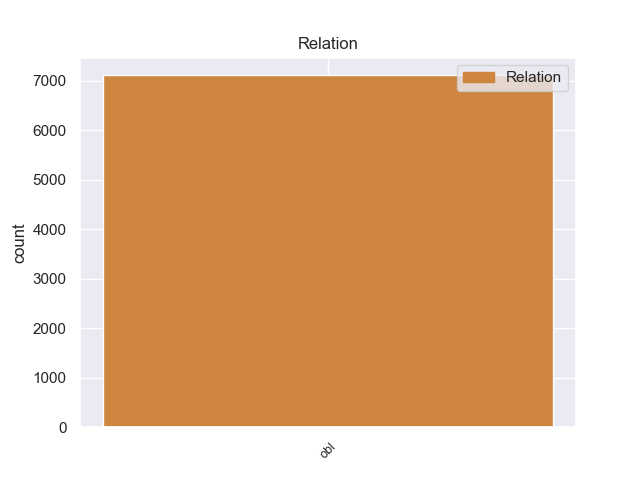
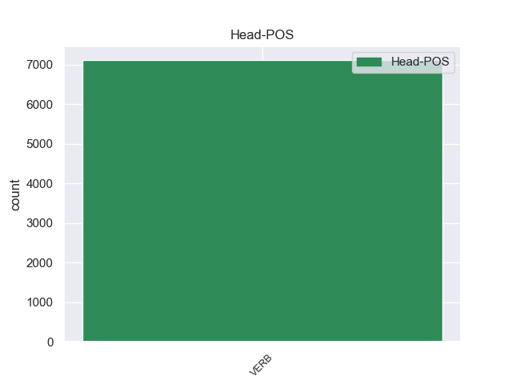
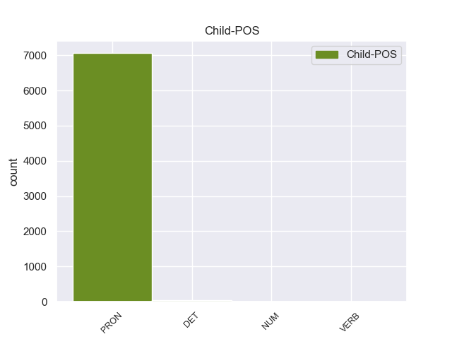

Distribution of features within this leaf



Morphosyntax Rules sorted by frequency.
- When the dependent token is the oblique nominal(obl) of the head token, and the head token is ADJ and the dependent token is NOUN, the Case needs to be Gen.
1 Я _ _ _ _ 0 _ _ _
2 хорошо _ _ _ _ 0 _ _ _
3 знал _ _ _ _ 0 _ _ _
4 окрестность _ _ _ _ 0 _ _ _
5 : _ _ _ _ 0 _ _ _
6 и _ _ _ _ 0 _ _ _
7 со _ _ _ _ 0 _ _ _
8 стороны _ _ _ _ 0 _ _ _
9 Дмитровского _ _ _ _ 0 _ _ _
10 шоссе шоссе NOUN _ Animacy=Inan|Case=Gen|Gender=Neut|Number=Sing 32 obl 32:obl SpaceAfter=No
11 , _ _ _ _ 0 _ _ _
12 и _ _ _ _ 0 _ _ _
13 со _ _ _ _ 0 _ _ _
14 стороны _ _ _ _ 0 _ _ _
15 нашей _ _ _ _ 0 _ _ _
16 дачи _ _ _ _ 0 _ _ _
17 , _ _ _ _ 0 _ _ _
18 и _ _ _ _ 0 _ _ _
19 со _ _ _ _ 0 _ _ _
20 стороны _ _ _ _ 0 _ _ _
21 кочкастого _ _ _ _ 0 _ _ _
22 болота _ _ _ _ 0 _ _ _
23 , _ _ _ _ 0 _ _ _
24 тянущегося _ _ _ _ 0 _ _ _
25 за _ _ _ _ 0 _ _ _
26 горизонт _ _ _ _ 0 _ _ _
27 , _ _ _ _ 0 _ _ _
28 лесные _ _ _ _ 0 _ _ _
29 опушки _ _ _ _ 0 _ _ _
30 были _ _ _ _ 0 _ _ _
31 сплошь _ _ _ _ 0 _ _ _
32 ольховые ольховый ADJ _ Case=Nom|Degree=Pos|Number=Plur 0 _ _ _
33 . _ _ _ _ 0 _ _ _
1 Чем _ _ _ _ 0 _ _ _
2 дальше _ _ _ _ 0 _ _ _
3 я _ _ _ _ 0 _ _ _
4 шел _ _ _ _ 0 _ _ _
5 , _ _ _ _ 0 _ _ _
6 тем _ _ _ _ 0 _ _ _
7 плотнее _ _ _ _ 0 _ _ _
8 росли _ _ _ _ 0 _ _ _
9 деревья _ _ _ _ 0 _ _ _
10 , _ _ _ _ 0 _ _ _
11 узкие _ _ _ _ 0 _ _ _
12 прозоры _ _ _ _ 0 _ _ _
13 между _ _ _ _ 0 _ _ _
14 ними _ _ _ _ 0 _ _ _
15 забил _ _ _ _ 0 _ _ _
16 валежник _ _ _ _ 0 _ _ _
17 , _ _ _ _ 0 _ _ _
18 трава _ _ _ _ 0 _ _ _
19 поднялась _ _ _ _ 0 _ _ _
20 , _ _ _ _ 0 _ _ _
21 стала _ _ _ _ 0 _ _ _
22 в _ _ _ _ 0 _ _ _
23 пол _ _ _ _ 0 _ _ _
24 моего _ _ _ _ 0 _ _ _
25 роста _ _ _ _ 0 _ _ _
26 , _ _ _ _ 0 _ _ _
27 а _ _ _ _ 0 _ _ _
28 стройные _ _ _ _ 0 _ _ _
29 розовые _ _ _ _ 0 _ _ _
30 , _ _ _ _ 0 _ _ _
31 похожие _ _ _ _ 0 _ _ _
32 на _ _ _ _ 0 _ _ _
33 свечи _ _ _ _ 0 _ _ _
34 цветы _ _ _ _ 0 _ _ _
35 вознеслись _ _ _ _ 0 _ _ _
36 куда _ _ _ _ 0 _ _ _
37 выше высоко ADV _ Degree=Cmp 0 _ _ _
38 моей _ _ _ _ 0 _ _ _
39 головы голова NOUN _ Animacy=Inan|Case=Gen|Gender=Fem|Number=Sing 37 obl 37:obl SpaceAfter=No
40 , _ _ _ _ 0 _ _ _
41 и _ _ _ _ 0 _ _ _
42 все _ _ _ _ 0 _ _ _
43 труднее _ _ _ _ 0 _ _ _
44 пробираться _ _ _ _ 0 _ _ _
45 вперед _ _ _ _ 0 _ _ _
46 , _ _ _ _ 0 _ _ _
47 и _ _ _ _ 0 _ _ _
48 чуть _ _ _ _ 0 _ _ _
49 посмерклось _ _ _ _ 0 _ _ _
50 , _ _ _ _ 0 _ _ _
51 потому _ _ _ _ 0 _ _ _
52 что _ _ _ _ 0 _ _ _
53 дымно _ _ _ _ 0 _ _ _
54 - _ _ _ _ 0 _ _ _
55 голубые _ _ _ _ 0 _ _ _
56 столбы _ _ _ _ 0 _ _ _
57 не _ _ _ _ 0 _ _ _
58 могли _ _ _ _ 0 _ _ _
59 пробиться _ _ _ _ 0 _ _ _
60 сквозь _ _ _ _ 0 _ _ _
61 теснотищу _ _ _ _ 0 _ _ _
62 куп _ _ _ _ 0 _ _ _
63 . _ _ _ _ 0 _ _ _
1 Его _ _ _ _ 0 _ _ _
2 новое _ _ _ _ 0 _ _ _
3 существование _ _ _ _ 0 _ _ _
4 с _ _ _ _ 0 _ _ _
5 женой _ _ _ _ 0 _ _ _
6 и _ _ _ _ 0 _ _ _
7 детьми _ _ _ _ 0 _ _ _
8 было _ _ _ _ 0 _ _ _
9 настолько _ _ _ _ 0 _ _ _
10 для _ _ _ _ 0 _ _ _
11 него он PRON _ Case=Gen|Gender=Masc|Number=Sing|Person=3 12 obl 12:obl _
12 драгоценно драгоценный ADJ _ Degree=Pos|Gender=Neut|Number=Sing|Variant=Short 0 _ _ _
13 , _ _ _ _ 0 _ _ _
14 что _ _ _ _ 0 _ _ _
15 призраки _ _ _ _ 0 _ _ _
16 былого _ _ _ _ 0 _ _ _
17 не _ _ _ _ 0 _ _ _
18 допускались _ _ _ _ 0 _ _ _
19 сюда _ _ _ _ 0 _ _ _
20 . _ _ _ _ 0 _ _ _
1 И _ _ _ _ 0 _ _ _
2 до _ _ _ _ 0 _ _ _
3 того то PRON _ Animacy=Inan|Case=Gen|Gender=Masc|Number=Sing 4 obl 4:obl _
4 здорово здорово ADV _ Degree=Pos 0 _ _ _
5 ее _ _ _ _ 0 _ _ _
6 видно _ _ _ _ 0 _ _ _
7 было _ _ _ _ 0 _ _ _
8 ! _ _ _ _ 0 _ _ _
1 Сколько сколько NUM _ _ 0 _ _ _
2 минуло _ _ _ _ 0 _ _ _
3 лет год NOUN _ Animacy=Inan|Case=Gen|Gender=Masc|Number=Plur 1 obl 1:obl SpaceAfter=No
4 , _ _ _ _ 0 _ _ _
5 а _ _ _ _ 0 _ _ _
6 мне _ _ _ _ 0 _ _ _
7 до _ _ _ _ 0 _ _ _
8 сих _ _ _ _ 0 _ _ _
9 пор _ _ _ _ 0 _ _ _
10 снятся _ _ _ _ 0 _ _ _
11 его _ _ _ _ 0 _ _ _
12 пестрота _ _ _ _ 0 _ _ _
13 и _ _ _ _ 0 _ _ _
14 шум _ _ _ _ 0 _ _ _
15 , _ _ _ _ 0 _ _ _
16 его _ _ _ _ 0 _ _ _
17 снедь _ _ _ _ 0 _ _ _
18 и _ _ _ _ 0 _ _ _
19 сытые _ _ _ _ 0 _ _ _
20 запахи _ _ _ _ 0 _ _ _
21 , _ _ _ _ 0 _ _ _
22 теплая _ _ _ _ 0 _ _ _
23 , _ _ _ _ 0 _ _ _
24 вязкая _ _ _ _ 0 _ _ _
25 смолка _ _ _ _ 0 _ _ _
26 , _ _ _ _ 0 _ _ _
27 кедровая _ _ _ _ 0 _ _ _
28 халва _ _ _ _ 0 _ _ _
29 и _ _ _ _ 0 _ _ _
30 золотые _ _ _ _ 0 _ _ _
31 глаза _ _ _ _ 0 _ _ _
32 женщины _ _ _ _ 0 _ _ _
33 . _ _ _ _ 0 _ _ _
1 В _ _ _ _ 0 _ _ _
2 то _ _ _ _ 0 _ _ _
3 же _ _ _ _ 0 _ _ _
4 время _ _ _ _ 0 _ _ _
5 для _ _ _ _ 0 _ _ _
6 ряда _ _ _ _ 0 _ _ _
7 государств _ _ _ _ 0 _ _ _
8 Центральной _ _ _ _ 0 _ _ _
9 и _ _ _ _ 0 _ _ _
10 Восточной _ _ _ _ 0 _ _ _
11 Европы _ _ _ _ 0 _ _ _
12 : _ _ _ _ 0 _ _ _
13 Чехословакии _ _ _ _ 0 _ _ _
14 , _ _ _ _ 0 _ _ _
15 Польши _ _ _ _ 0 _ _ _
16 , _ _ _ _ 0 _ _ _
17 Венгрии _ _ _ _ 0 _ _ _
18 , _ _ _ _ 0 _ _ _
19 ГДР _ _ _ _ 0 _ _ _
20 , _ _ _ _ 0 _ _ _
21 Югославии _ _ _ _ 0 _ _ _
22 железный _ _ _ _ 0 _ _ _
23 занавес _ _ _ _ 0 _ _ _
24 не _ _ _ _ 0 _ _ _
25 был _ _ _ _ 0 _ _ _
26 столь _ _ _ _ 0 _ _ _
27 непроницаемым непроницаемый ADJ _ Case=Ins|Degree=Pos|Gender=Masc|Number=Sing 0 _ _ _
28 , _ _ _ _ 0 _ _ _
29 как _ _ _ _ 0 _ _ _
30 для _ _ _ _ 0 _ _ _
31 СССР СССР PROPN _ Animacy=Inan|Case=Gen|Gender=Masc|Number=Sing 27 obl 27:obl SpaceAfter=No
32 . _ _ _ _ 0 _ _ _
1 Расчеты _ _ _ _ 0 _ _ _
2 показывают _ _ _ _ 0 _ _ _
3 , _ _ _ _ 0 _ _ _
4 что _ _ _ _ 0 _ _ _
5 восточнее восточнее ADV _ Degree=Pos 0 _ _ _
6 Урала Урал PROPN _ Animacy=Inan|Case=Gen|Gender=Masc|Number=Sing 5 obl 5:obl _
7 спутниковые _ _ _ _ 0 _ _ _
8 линии _ _ _ _ 0 _ _ _
9 связи _ _ _ _ 0 _ _ _
10 втрое _ _ _ _ 0 _ _ _
11 дешевле _ _ _ _ 0 _ _ _
12 радиорелейных _ _ _ _ 0 _ _ _
13 , _ _ _ _ 0 _ _ _
14 а _ _ _ _ 0 _ _ _
15 темпы _ _ _ _ 0 _ _ _
16 их _ _ _ _ 0 _ _ _
17 создания _ _ _ _ 0 _ _ _
18 в _ _ _ _ 0 _ _ _
19 десятки _ _ _ _ 0 _ _ _
20 раз _ _ _ _ 0 _ _ _
21 выше _ _ _ _ 0 _ _ _
22 . _ _ _ _ 0 _ _ _
1 Но _ _ _ _ 0 _ _ _
2 зато _ _ _ _ 0 _ _ _
3 сколько сколько NUM _ _ 0 _ _ _
4 их они PRON _ Case=Gen|Number=Plur|Person=3 3 obl 3:obl _
5 было _ _ _ _ 0 _ _ _
6 потом _ _ _ _ 0 _ _ _
7 , _ _ _ _ 0 _ _ _
8 сколько _ _ _ _ 0 _ _ _
9 верст _ _ _ _ 0 _ _ _
10 проделал _ _ _ _ 0 _ _ _
11 я _ _ _ _ 0 _ _ _
12 по _ _ _ _ 0 _ _ _
13 следам _ _ _ _ 0 _ _ _
14 отца _ _ _ _ 0 _ _ _
15 : _ _ _ _ 0 _ _ _
16 далекий _ _ _ _ 0 _ _ _
17 Иркутск _ _ _ _ 0 _ _ _
18 , _ _ _ _ 0 _ _ _
19 душный _ _ _ _ 0 _ _ _
20 , _ _ _ _ 0 _ _ _
21 пропыленный _ _ _ _ 0 _ _ _
22 Саратов _ _ _ _ 0 _ _ _
23 , _ _ _ _ 0 _ _ _
24 первое _ _ _ _ 0 _ _ _
25 чудо _ _ _ _ 0 _ _ _
26 Ленинграда _ _ _ _ 0 _ _ _
27 , _ _ _ _ 0 _ _ _
28 забытый _ _ _ _ 0 _ _ _
29 богом _ _ _ _ 0 _ _ _
30 Егорьевск _ _ _ _ 0 _ _ _
31 , _ _ _ _ 0 _ _ _
32 Кандалакша _ _ _ _ 0 _ _ _
33 среди _ _ _ _ 0 _ _ _
34 поросших _ _ _ _ 0 _ _ _
35 карликовыми _ _ _ _ 0 _ _ _
36 соснами _ _ _ _ 0 _ _ _
37 сопок _ _ _ _ 0 _ _ _
38 и _ _ _ _ 0 _ _ _
39 похожих _ _ _ _ 0 _ _ _
40 на _ _ _ _ 0 _ _ _
41 осколки _ _ _ _ 0 _ _ _
42 зеркала _ _ _ _ 0 _ _ _
43 озер _ _ _ _ 0 _ _ _
44 , _ _ _ _ 0 _ _ _
45 край _ _ _ _ 0 _ _ _
46 , _ _ _ _ 0 _ _ _
47 разлинованный _ _ _ _ 0 _ _ _
48 , _ _ _ _ 0 _ _ _
49 как _ _ _ _ 0 _ _ _
50 ученическая _ _ _ _ 0 _ _ _
51 тетрадь _ _ _ _ 0 _ _ _
52 , _ _ _ _ 0 _ _ _
53 рядами _ _ _ _ 0 _ _ _
54 колючей _ _ _ _ 0 _ _ _
55 проволоки _ _ _ _ 0 _ _ _
56 , _ _ _ _ 0 _ _ _
57 страшная _ _ _ _ 0 _ _ _
58 Рохма _ _ _ _ 0 _ _ _
59 … _ _ _ _ 0 _ _ _
1 Если _ _ _ _ 0 _ _ _
2 бы _ _ _ _ 0 _ _ _
3 Лаврентий _ _ _ _ 0 _ _ _
4 Берия _ _ _ _ 0 _ _ _
5 стоял _ _ _ _ 0 _ _ _
6 во во ADP _ _ 0 _ _ _
7 главе _ _ _ _ 0 _ _ _
8 страны страна NOUN _ Animacy=Inan|Case=Gen|Gender=Fem|Number=Sing 6 obl 6:obl SpaceAfter=No
9 , _ _ _ _ 0 _ _ _
10 то _ _ _ _ 0 _ _ _
11 советская _ _ _ _ 0 _ _ _
12 власть _ _ _ _ 0 _ _ _
13 все _ _ _ _ 0 _ _ _
14 равно _ _ _ _ 0 _ _ _
15 бы _ _ _ _ 0 _ _ _
16 осталась _ _ _ _ 0 _ _ _
17 . _ _ _ _ 0 _ _ _
1 Во _ _ _ _ 0 _ _ _
2 время _ _ _ _ 0 _ _ _
3 правления правление NOUN _ Animacy=Inan|Case=Gen|Gender=Neut|Number=Sing 6 obl 6:obl _
4 Гранта _ _ _ _ 0 _ _ _
5 в _ _ _ _ 0 _ _ _
6 PM PM PROPN _ Foreign=Yes 0 _ _ _
7 стали _ _ _ _ 0 _ _ _
8 доминировать _ _ _ _ 0 _ _ _
9 фундаментальные _ _ _ _ 0 _ _ _
10 темы _ _ _ _ 0 _ _ _
11 . _ _ _ _ 0 _ _ _
1 - _ _ _ _ 0 _ _ _
2 А _ _ _ _ 0 _ _ _
3 сколько сколько NUM _ _ 0 _ _ _
4 в _ _ _ _ 0 _ _ _
5 России _ _ _ _ 0 _ _ _
6 НКО НКО PROPN _ Animacy=Inan|Case=Gen|Gender=Fem|Number=Plur 3 obl 3:obl SpaceAfter=No
7 , _ _ _ _ 0 _ _ _
8 которые _ _ _ _ 0 _ _ _
9 получают _ _ _ _ 0 _ _ _
10 исключительно _ _ _ _ 0 _ _ _
11 российские _ _ _ _ 0 _ _ _
12 деньги _ _ _ _ 0 _ _ _
13 ? _ _ _ _ 0 _ _ _
1 В _ _ _ _ 0 _ _ _
2 Управлении _ _ _ _ 0 _ _ _
3 Генпрокуратуры _ _ _ _ 0 _ _ _
4 РФ _ _ _ _ 0 _ _ _
5 на _ _ _ _ 0 _ _ _
6 Северном _ _ _ _ 0 _ _ _
7 Кавказе _ _ _ _ 0 _ _ _
8 начато _ _ _ _ 0 _ _ _
9 следствие следствие NOUN _ Animacy=Inan|Case=Nom|Gender=Neut|Number=Sing 0 _ _ _
10 в _ _ _ _ 0 _ _ _
11 отношении _ _ _ _ 0 _ _ _
12 задержанного задержать VERB _ Aspect=Perf|Case=Gen|Gender=Masc|Number=Sing|Tense=Past|VerbForm=Part|Voice=Pass 9 obl 9:obl _
13 накануне _ _ _ _ 0 _ _ _
14 в _ _ _ _ 0 _ _ _
15 селении _ _ _ _ 0 _ _ _
16 Ведено _ _ _ _ 0 _ _ _
17 Чеченской _ _ _ _ 0 _ _ _
18 республики _ _ _ _ 0 _ _ _
19 Муссы _ _ _ _ 0 _ _ _
20 Гентиева _ _ _ _ 0 _ _ _
21 . _ _ _ _ 0 _ _ _
1 Возник _ _ _ _ 0 _ _ _
2 вопрос вопрос NOUN _ Animacy=Inan|Case=Nom|Gender=Masc|Number=Sing 0 _ _ _
3 , _ _ _ _ 0 _ _ _
4 из _ _ _ _ 0 _ _ _
When the dependent token is the oblique nominal(obl) of the head token, and the head token is ADP and the dependent token is PRON, the Case needs to be Gen.
1 Отсюда _ _ _ _ 0 _ _ _
2 вопрос _ _ _ _ 0 _ _ _
3 : _ _ _ _ 0 _ _ _
4 а _ _ _ _ 0 _ _ _
5 что _ _ _ _ 0 _ _ _
6 изменится _ _ _ _ 0 _ _ _
7 в _ _ _ _ 0 _ _ _
8 деле _ _ _ _ 0 _ _ _
9 борьбы _ _ _ _ 0 _ _ _
10 с _ _ _ _ 0 _ _ _
11 терроризмом _ _ _ _ 0 _ _ _
12 с _ _ _ _ 0 _ _ _
13 появлением _ _ _ _ 0 _ _ _
14 новой _ _ _ _ 0 _ _ _
15 конторы _ _ _ _ 0 _ _ _
16 , _ _ _ _ 0 _ _ _
17 во во ADP _ _ 0 _ _ _
18 главе _ _ _ _ 0 _ _ _
19 которой который PRON _ Case=Gen 17 obl 17:obl _
20 будет _ _ _ _ 0 _ _ _
21 директор _ _ _ _ 0 _ _ _
22 ведомства _ _ _ _ 0 _ _ _
23 , _ _ _ _ 0 _ _ _
24 уже _ _ _ _ 0 _ _ _
25 доказавшего _ _ _ _ 0 _ _ _
26 свою _ _ _ _ 0 _ _ _
27 несостоятельность _ _ _ _ 0 _ _ _
28 ? _ _ _ _ 0 _ _ _
29 ! _ _ _ _ 0 _ _ _
When the dependent token is the oblique nominal(obl) of the head token, and the head token is NOUN and the dependent token is DET, the Case needs to be Gen.
1 В _ _ _ _ 0 _ _ _
2 воскресенье _ _ _ _ 0 _ _ _
3 в _ _ _ _ 0 _ _ _
4 Германии _ _ _ _ 0 _ _ _
5 стало _ _ _ _ 0 _ _ _
6 известно _ _ _ _ 0 _ _ _
7 об _ _ _ _ 0 _ _ _
8 аресте арест NOUN _ Animacy=Inan|Case=Loc|Gender=Masc|Number=Sing 0 _ _ _
9 одного один DET _ Case=Gen|Degree=Pos|Gender=Masc|Number=Sing 8 obl 8:obl _
10 из _ _ _ _ 0 _ _ _
11 преступников _ _ _ _ 0 _ _ _
12 , _ _ _ _ 0 _ _ _
13 совершивших _ _ _ _ 0 _ _ _
14 самую _ _ _ _ 0 _ _ _
15 крупную _ _ _ _ 0 _ _ _
16 кражу _ _ _ _ 0 _ _ _
17 наличных _ _ _ _ 0 _ _ _
18 евро _ _ _ _ 0 _ _ _
19 . _ _ _ _ 0 _ _ _
When the dependent token is the oblique nominal(obl) of the head token, and the head token is NOUN and the dependent token is NOUN, the Case needs to be Gen.
1 Вот _ _ _ _ 0 _ _ _
2 расшифровка расшифровка NOUN _ Animacy=Inan|Case=Nom|Gender=Fem|Number=Sing 0 _ _ _
3 его _ _ _ _ 0 _ _ _
4 звонка звонок NOUN _ Animacy=Inan|Case=Gen|Gender=Fem|Number=Sing 2 obl 2:obl _
5 ( _ _ _ _ 0 _ _ _
6 без _ _ _ _ 0 _ _ _
7 исправлений _ _ _ _ 0 _ _ _
8 ) _ _ _ _ 0 _ _ _
9 . _ _ _ _ 0 _ _ _
When the dependent token is the oblique nominal(obl) of the head token, and the head token is ADP and the dependent token is PROPN, the Case needs to be Gen.
1 То _ _ _ _ 0 _ _ _
2 хмельные _ _ _ _ 0 _ _ _
3 офицеры _ _ _ _ 0 _ _ _
4 будут _ _ _ _ 0 _ _ _
5 перехвачены _ _ _ _ 0 _ _ _
6 без _ _ _ _ 0 _ _ _
7 грузинских _ _ _ _ 0 _ _ _
8 виз _ _ _ _ 0 _ _ _
9 на на ADP _ _ 0 _ _ _
10 полпути _ _ _ _ 0 _ _ _
11 из _ _ _ _ 0 _ _ _
12 России Россия PROPN _ Animacy=Inan|Case=Gen|Gender=Fem|Number=Sing 9 obl 9:obl _
13 в _ _ _ _ 0 _ _ _
14 Цхинвали _ _ _ _ 0 _ _ _
15 . _ _ _ _ 0 _ _ _
When the dependent token is the oblique nominal(obl) of the head token, and the head token is PRON and the dependent token is NOUN, the Case needs to be Gen.
1 Выяснилось _ _ _ _ 0 _ _ _
2 , _ _ _ _ 0 _ _ _
3 что _ _ _ _ 0 _ _ _
4 с _ _ _ _ 0 _ _ _
5 понедельника понедельник NOUN _ Animacy=Inan|Case=Gen|Gender=Masc|Number=Sing 9 obl 9:obl _
6 по _ _ _ _ 0 _ _ _
7 среду _ _ _ _ 0 _ _ _
8 вообще _ _ _ _ 0 _ _ _
9 нечем нечего PRON _ Case=Ins 0 _ _ _
10 торговать _ _ _ _ 0 _ _ _
11 с _ _ _ _ 0 _ _ _
12 серьезными _ _ _ _ 0 _ _ _
13 заказчиками _ _ _ _ 0 _ _ _
14 . _ _ _ _ 0 _ _ _
When the dependent token is the oblique nominal(obl) of the head token, and the head token is PART and the dependent token is PRON, the Case needs to be Gen.
1 Впрочем _ _ _ _ 0 _ _ _
2 , _ _ _ _ 0 _ _ _
3 коррупция _ _ _ _ 0 _ _ _
4 , _ _ _ _ 0 _ _ _
5 выдача _ _ _ _ 0 _ _ _
6 сладких _ _ _ _ 0 _ _ _
7 кусков _ _ _ _ 0 _ _ _
8 государства _ _ _ _ 0 _ _ _
9 в _ _ _ _ 0 _ _ _
10 ленные _ _ _ _ 0 _ _ _
11 владения _ _ _ _ 0 _ _ _
12 верным _ _ _ _ 0 _ _ _
13 вассалам _ _ _ _ 0 _ _ _
14 и _ _ _ _ 0 _ _ _
15 кумовство _ _ _ _ 0 _ _ _
16 позволяют _ _ _ _ 0 _ _ _
17 увеличивать _ _ _ _ 0 _ _ _
18 число _ _ _ _ 0 _ _ _
19 тех _ _ _ _ 0 _ _ _
20 , _ _ _ _ 0 _ _ _
21 у _ _ _ _ 0 _ _ _
22 кого кто PRON _ Case=Gen 24 obl 24:obl _
23 все _ _ _ _ 0 _ _ _
24 о'кей окей PART _ _ 0 _ _ _
25 . _ _ _ _ 0 _ _ _
When the dependent token is the oblique nominal(obl) of the head token, and the head token is PROPN and the dependent token is PRON, the Case needs to be Gen.
1 За _ _ _ _ 0 _ _ _
2 IT IT PROPN _ Foreign=Yes 0 _ _ _
3 в _ _ _ _ 0 _ _ _
4 отдельности _ _ _ _ 0 _ _ _
5 у _ _ _ _ 0 _ _ _
6 нас мы PRON _ Case=Gen|Number=Plur|Person=1 2 obl 2:obl _
7 отвечает _ _ _ _ 0 _ _ _
8 Мининформсвязи _ _ _ _ 0 _ _ _
9 . _ _ _ _ 0 _ _ _
When the dependent token is the oblique nominal(obl) of the head token, and the head token is X and the dependent token is NOUN, the Case needs to be Gen.
1 А _ _ _ _ 0 _ _ _
2 сегодня _ _ _ _ 0 _ _ _
3 в _ _ _ _ 0 _ _ _
4 endowment endowment X _ Foreign=Yes 0 _ _ _
5 ( _ _ _ _ 0 _ _ _
6 фонд _ _ _ _ 0 _ _ _
7 целевого _ _ _ _ 0 _ _ _
8 капитала _ _ _ _ 0 _ _ _
9 ) _ _ _ _ 0 _ _ _
10 ВШМ _ _ _ _ 0 _ _ _
11 СПбГУ _ _ _ _ 0 _ _ _
12 привлекла _ _ _ _ 0 _ _ _
13 около _ _ _ _ 0 _ _ _
14 $ _ _ _ _ 0 _ _ _
15 16 _ _ _ _ 0 _ _ _
16 млн миллион NOUN _ Animacy=Inan|Case=Gen|Gender=Masc|Number=Plur 4 obl 4:obl SpaceAfter=No
17 . _ _ _ _ 0 _ _ _
When the dependent token is the oblique nominal(obl) of the head token, and the head token is SYM and the dependent token is NOUN, the Case needs to be Gen.
1 Следующими _ _ _ _ 0 _ _ _
2 идут _ _ _ _ 0 _ _ _
3 аттосекунды _ _ _ _ 0 _ _ _
4 ( _ _ _ _ 0 _ _ _
5 1 _ _ _ _ 0 _ _ _
6 ас _ _ _ _ 0 _ _ _
7 = = SYM _ _ 0 _ _ _
8 10^-18 _ _ _ _ 0 _ _ _
9 с секунда NOUN _ Animacy=Inan|Case=Gen|Gender=Fem|Number=Sing 7 obl 7:obl SpaceAfter=No
10 ) _ _ _ _ 0 _ _ _
11 . _ _ _ _ 0 _ _ _
non-conforming Examples:
1 Оттуда _ _ _ _ 0 _ _ _
2 и _ _ _ _ 0 _ _ _
3 пришла _ _ _ _ 0 _ _ _
4 эта _ _ _ _ 0 _ _ _
5 копия _ _ _ _ 0 _ _ _
6 и _ _ _ _ 0 _ _ _
7 вместе вместе ADV _ Degree=Pos 0 _ _ _
8 с _ _ _ _ 0 _ _ _
9 ней она PRON _ Case=Ins|Gender=Fem|Number=Sing|Person=3 7 obl 7:obl _
10 распоряжение _ _ _ _ 0 _ _ _
11 , _ _ _ _ 0 _ _ _
12 в _ _ _ _ 0 _ _ _
13 котором _ _ _ _ 0 _ _ _
14 предлагалось _ _ _ _ 0 _ _ _
15 немедленно _ _ _ _ 0 _ _ _
16 ликвидировать _ _ _ _ 0 _ _ _
17 перебои _ _ _ _ 0 _ _ _
18 , _ _ _ _ 0 _ _ _
19 наказать _ _ _ _ 0 _ _ _
20 виновных _ _ _ _ 0 _ _ _
21 и _ _ _ _ 0 _ _ _
22 доложить _ _ _ _ 0 _ _ _
23 об _ _ _ _ 0 _ _ _
24 исполнении _ _ _ _ 0 _ _ _
25 к _ _ _ _ 0 _ _ _
26 такому-то _ _ _ _ 0 _ _ _
27 числу _ _ _ _ 0 _ _ _
28 . _ _ _ _ 0 _ _ _
1 Работники _ _ _ _ 0 _ _ _
2 такой _ _ _ _ 0 _ _ _
3 специальности _ _ _ _ 0 _ _ _
4 в _ _ _ _ 0 _ _ _
5 нашей _ _ _ _ 0 _ _ _
6 системе система NOUN _ Animacy=Inan|Case=Loc|Gender=Fem|Number=Sing 8 obl 8:obl _
7 всегда _ _ _ _ 0 _ _ _
8 нужны нужный ADJ _ Degree=Pos|Number=Plur|Variant=Short 0 _ _ _
9 позарез _ _ _ _ 0 _ _ _
10 , _ _ _ _ 0 _ _ _
11 и _ _ _ _ 0 _ _ _
12 Семен _ _ _ _ 0 _ _ _
13 Еремеевич _ _ _ _ 0 _ _ _
14 стал _ _ _ _ 0 _ _ _
15 читать _ _ _ _ 0 _ _ _
16 внимательнее _ _ _ _ 0 _ _ _
17 . _ _ _ _ 0 _ _ _
1 Буквы _ _ _ _ 0 _ _ _
2 " _ _ _ _ 0 _ _ _
3 д _ _ _ _ 0 _ _ _
4 " _ _ _ _ 0 _ _ _
5 в _ _ _ _ 0 _ _ _
6 коротенькой _ _ _ _ 0 _ _ _
7 , _ _ _ _ 0 _ _ _
8 на _ _ _ _ 0 _ _ _
9 одну _ _ _ _ 0 _ _ _
10 страничку _ _ _ _ 0 _ _ _
11 , _ _ _ _ 0 _ _ _
12 автобиографии _ _ _ _ 0 _ _ _
13 торчали _ _ _ _ 0 _ _ _
14 вверх вверх ADV _ Degree=Pos 0 _ _ _
15 хвостиками хвостик NOUN _ Animacy=Inan|Case=Ins|Gender=Masc|Number=Plur 14 obl 14:obl SpaceAfter=No
16 . _ _ _ _ 0 _ _ _
1 - _ _ _ _ 0 _ _ _
2 А _ _ _ _ 0 _ _ _
3 как как ADV _ Degree=Pos 0 _ _ _
4 она _ _ _ _ 0 _ _ _
5 по _ _ _ _ 0 _ _ _
6 бытовой _ _ _ _ 0 _ _ _
7 линии линия NOUN _ Animacy=Inan|Case=Dat|Gender=Fem|Number=Sing 3 obl 3:obl SpaceAfter=No
8 ? _ _ _ _ 0 _ _ _
9 - _ _ _ _ 0 _ _ _
10 спросил _ _ _ _ 0 _ _ _
11 Семен _ _ _ _ 0 _ _ _
12 Еремеевич _ _ _ _ 0 _ _ _
13 . _ _ _ _ 0 _ _ _
1 Савельев _ _ _ _ 0 _ _ _
2 объяснил _ _ _ _ 0 _ _ _
3 , _ _ _ _ 0 _ _ _
4 что _ _ _ _ 0 _ _ _
5 вышла _ _ _ _ 0 _ _ _
6 замуж замуж ADV _ Degree=Pos 0 _ _ _
7 за _ _ _ _ 0 _ _ _
8 диктора диктор NOUN _ Animacy=Anim|Case=Acc|Gender=Masc|Number=Sing 6 obl 6:obl _
9 районного _ _ _ _ 0 _ _ _
10 радиоузла _ _ _ _ 0 _ _ _
11 . _ _ _ _ 0 _ _ _